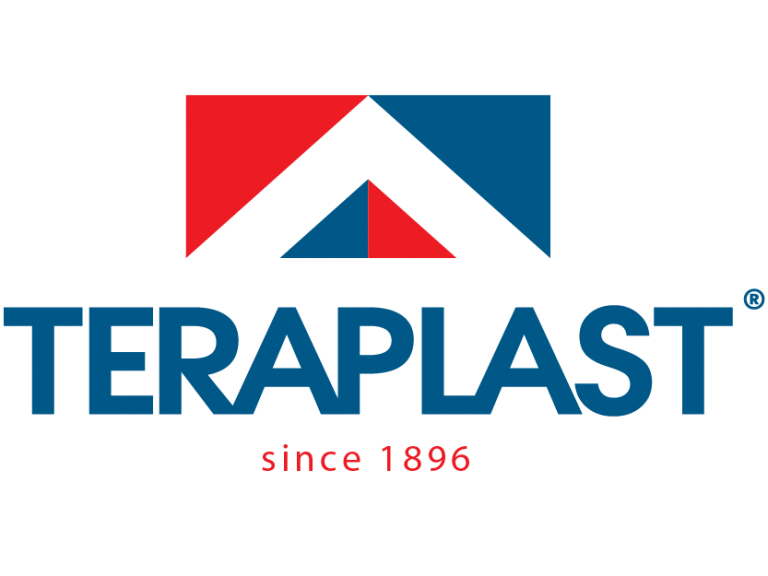
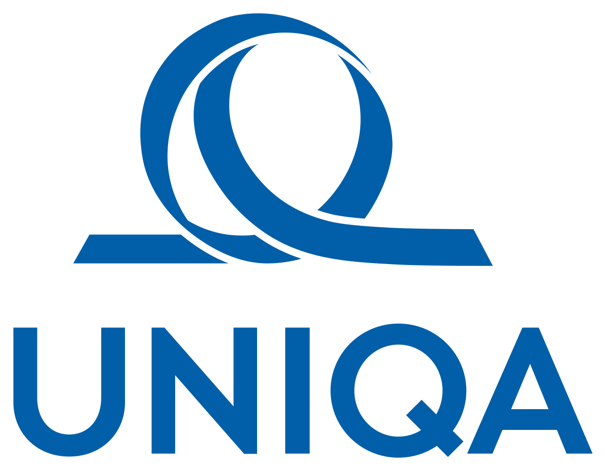

As the largest polymer processor in South-Eastern Europe, TeraPlast is a powerhouse of Romanian entrepreneurship and industrial innovation. With over 125 years of history, the group provides advanced solutions in installation systems and PVC granules, characterized by high durability and technical precision. Their commitment to sustainable development and infrastructure excellence makes them a foundational partner for projects requiring robust engineering and advanced material science.

UNIQA is a leading financial services provider in Central and Eastern Europe, dedicated to empowering its 17 million customers through security and innovation. Beyond offering comprehensive insurance solutions, UNIQA is deeply invested in the "SEE Future Foundation," which supports young talents in technology, culture, and sustainability. Their partnership reflects a core brand promise of "living better together" by fostering the next generation of problem-solvers and innovators.
UTCN is a premier academic institution and a vital hub for technological research and engineering excellence in Romania. As the primary organizer behind competitions like BattleLab Robotica, the university provides the essential academic framework, expert mentorship, and state-of-the-art facilities needed for students to excel. UTCN’s role is instrumental in bridging the gap between theoretical complex algorithms and real-world robotic applications.
Fuel the future of engineering and showcase your brand to a global audience! We rely on the forward-thinking vision of organizations like yours to push technological boundaries. Become a sponsor and directly impact student innovation, gain exclusive access to top engineering talent, and associate your company with advanced, award-winning robotics projects. Together, we can shape the engineers of tomorrow. Please contact us to explore tailored sponsorship opportunities.
Contact Us to Sponsor